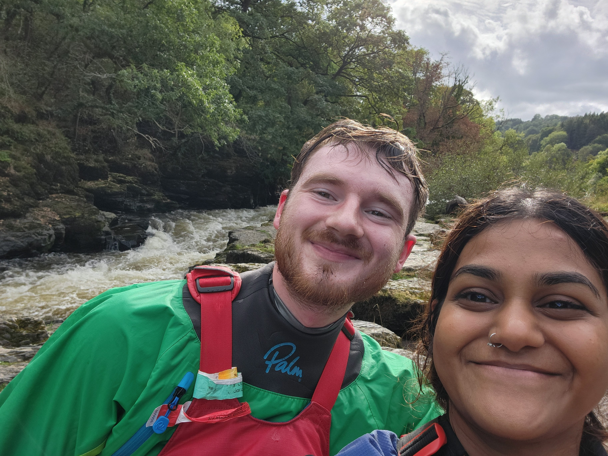

Welcome to the Rogue State. Please fill out the interest form if you'd like to get on peer paddles and check out our trip log below. You can find info about our members in the About Us section.
13/09/26: River Dee, North Wales

The first paddle of the roguestate's trip log! Took my lovely girlfriend Chris for her first Dee lap (2nd time on a river). She was bit scared and scowling at me at the start so we skipped serpents but after that she nailed every rapid and only swam once after getting flipped by a random rock. Good paddle tho and hopefully the first of many...